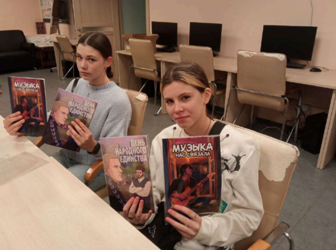

САНКТ-ПЕТЕРБУРГСКАЯ ОБЩЕСТВЕННАЯ ОРГАНИЗАЦИЯ «ЦЕНТР СОДЕЙСТВИЯ РЕАЛИЗАЦИИ СОЦИАЛЬНЫХ ИНИЦИАТИВ, ЗАНЯТОСТИ И СОЦИАЛЬНОЙ ПОМОЩИ «СОДЕЙСТВИЕ»
«На заре» – серия социальных графических романов, направленная на формирование у молодых людей, склонных к асоциальному поведению, критического мышления, умения рефлексировать и способности здраво оценивать свои поступки.
Первый выпуск серии «На заре» под названием «Вита будет в порядке» рассказывает историю, которая раскрывает отношения между начинающим педагогом-наставником и подопечным центра «Контакт». Во втором и третьем выпуске мы продолжили развивать тему, связанную со взаимодействием взрослого и подростка, и проиллюстрировали три истории с помощью параллельного повествования – это повествование, в котором несколько сюжетных линий развиваются параллельно друг другу. Вместо одной главной истории здесь присутствуют несколько равноправных историй, которые переплетаются и взаимодействуют друг с другом.
Каждый выпуск комикса состоит из 60 цветных страниц.
Проект представил иллюстративные примеры, которые помогают увидеть последствия поступков и их влияние на жизнь ребят и жизни других людей.
Количество благополучателей: 1000 человек.
Количество волонтеров: 3 человек.